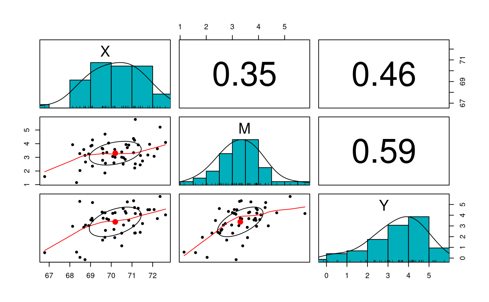

vignettes/notes/notes_nb_med.Rmd
notes_nb_med.RmdTHIS IS AN INITIAL DRAFT.
\[\begin{equation} Y = \delta_Y + \tau^{\prime} X + \beta M + \varepsilon_{Y} \end{equation}\]
\[\begin{equation} M = \delta_M + \alpha X + \varepsilon_{M} \end{equation}\]
The Simple Mediation Model
\[\begin{equation} X, M, Y \sim \mathrm{MVN} \left[ \boldsymbol{\mu} \left( \boldsymbol{\theta} \right), \boldsymbol{\Sigma} \left( \boldsymbol{\theta} \right) \right] \end{equation}\]
\[\begin{equation} \boldsymbol{\mu} \left( \boldsymbol{\theta} \right) = \begin{bmatrix} \mu_X \\ \delta_M + \alpha \mu_X \\ \delta_Y + \tau^{\prime} \mu_X + \beta \delta_M + \alpha \beta \mu_X \end{bmatrix} \end{equation}\]
\[\begin{equation} \boldsymbol{\Sigma} \left( \boldsymbol{\theta} \right) = \begin{bmatrix} \sigma^{2}_{X} & \alpha \sigma_{X}^{2} & \alpha \beta \sigma_{X}^{2} + \tau^{\prime} \sigma_{X}^{2} \\ \alpha \sigma_{X}^{2} & \alpha^{2} \sigma_{X}^{2} + \sigma_{\varepsilon_{M}}^{2} & \alpha^{2} \beta \sigma_{X}^{2} + \alpha \tau^{\prime} \sigma_{X}^{2} + \beta \sigma_{\varepsilon_{M}}^{2} \\ \alpha \beta \sigma_{X}^{2} + \tau^{\prime} \sigma_{X}^{2} & \alpha^{2} \beta \sigma_{X}^{2} + \alpha \tau^{\prime} \sigma_{X}^{2} + \beta \sigma_{\varepsilon_{M}}^{2} & \beta^{2} \alpha^{2} \sigma_{X}^{2} + \beta^{2} \sigma_{\varepsilon_{M}}^{2} + 2 \alpha \beta \tau^{\prime} \sigma_{X}^{2} + \tau^{\prime} \sigma_{X}^{2} + \sigma_{\varepsilon_{Y}}^{2} \end{bmatrix} \end{equation}\]
| Variable | Description | Notation | Value |
|---|---|---|---|
muX |
Mean of \(X\). | \(\mu_X\) | 70.18000 |
deltaM |
Intercept of \(M\). | \(\delta_M\) | -20.70243 |
deltaY |
Intercept of \(Y\). | \(\delta_Y\) | -14.19379 |
| Variable | Description | Notation | Value |
|---|---|---|---|
alpha |
Regression slope of path from \(X\) to \(M\). | \(\alpha\) | 0.3385926 |
tauprime |
Regression slope of path from \(X\) to \(Y\). | \(\tau^{\prime}\) | 0.2287891 |
beta |
Regression slope of path from \(M\) to \(Y\). | \(\beta\) | 0.4435855 |
alphabeta |
Indirect effect. | \(\alpha \beta\) | 0.1501948 |
| Variable | Description | Notation | Value |
|---|---|---|---|
sigma2X |
Variance of \(X\). | \(\sigma^2_X\) | 1.2934694 |
sigma2epsilonM |
Error variance of \(\varepsilon_M\). | \(\sigma^2_{\varepsilon_{M}}\) | 0.9296694 |
sigma2epsilonY |
Error variance of \(\varepsilon_Y\). | \(\sigma^2_{\varepsilon_{Y}}\) | 0.9900668 |
| x | |
|---|---|
| X | 70.18 |
| M | 3.06 |
| Y | 3.22 |
| X | M | Y | |
|---|---|---|---|
| X | 1.2934694 | 0.4379592 | 0.4902041 |
| M | 0.4379592 | 1.0779592 | 0.5783673 |
| Y | 0.4902041 | 0.5783673 | 1.3587755 |
X <- as.data.frame( mvrnorm( n = n, Sigma = Sigmatheta, mu = mutheta ) ) str(X) #> 'data.frame': 50 obs. of 3 variables: #> $ X: num 70.5 70.1 71.2 71 68.8 ... #> $ M: num 2.07 1.75 4.54 4.71 3.37 ... #> $ Y: num 3.83 4.19 3.06 5.74 4.14 ...

| x | |
|---|---|
| X | 70.135082 |
| M | 3.169421 |
| Y | 3.275985 |
| X | M | Y | |
|---|---|---|---|
| X | 1.2908724 | 0.6197118 | 0.5151681 |
| M | 0.6197118 | 1.2461445 | 0.6516738 |
| Y | 0.5151681 | 0.6516738 | 1.3217140 |
model_01 <- lm( M ~ X, data = X ) summary(model_01) #> #> Call: #> lm(formula = M ~ X, data = X) #> #> Residuals: #> Min 1Q Median 3Q Max #> -2.0364 -1.0233 0.1318 0.8208 1.4682 #> #> Coefficients: #> Estimate Std. Error t value Pr(>|t|) #> (Intercept) -30.5005 8.6792 -3.514 0.000973 *** #> X 0.4801 0.1237 3.880 0.000318 *** #> --- #> Signif. codes: 0 '***' 0.001 '**' 0.01 '*' 0.05 '.' 0.1 ' ' 1 #> #> Residual standard error: 0.9841 on 48 degrees of freedom #> Multiple R-squared: 0.2387, Adjusted R-squared: 0.2229 #> F-statistic: 15.05 on 1 and 48 DF, p-value: 0.0003181 model_02 <- lm( Y ~ X + M, data = X ) summary(model_02) #> #> Call: #> lm(formula = Y ~ X + M, data = X) #> #> Residuals: #> Min 1Q Median 3Q Max #> -2.12856 -0.63305 0.00171 0.54240 1.88635 #> #> Coefficients: #> Estimate Std. Error t value Pr(>|t|) #> (Intercept) -11.7131 9.8095 -1.194 0.23845 #> X 0.1945 0.1429 1.360 0.18021 #> M 0.4262 0.1455 2.930 0.00522 ** #> --- #> Signif. codes: 0 '***' 0.001 '**' 0.01 '*' 0.05 '.' 0.1 ' ' 1 #> #> Residual standard error: 0.9919 on 47 degrees of freedom #> Multiple R-squared: 0.286, Adjusted R-squared: 0.2556 #> F-statistic: 9.411 on 2 and 47 DF, p-value: 0.0003652
| Variable | Description | Notation | Value |
|---|---|---|---|
muXhat |
Estimated mean of \(X\). | \(\hat{\mu_X}\) | 70.13508 |
deltaMhat |
Estimated intercept of \(M\). | \(\hat{\delta_M}\) | -30.50047 |
deltaYhat |
Estimated intercept of \(Y\). | \(\hat{\delta_Y}\) | -11.71310 |
| Variable | Description | Notation | Value |
|---|---|---|---|
alphahat |
Estimated regression slope of path from \(X\) to \(M\). | \(\hat{\alpha}\) | 0.4800721 |
tauprimehat |
Estimated regression slope of path from \(X\) to \(Y\). | \(\hat{\tau}^{\prime}\) | 0.1944550 |
betahat |
Estimated regression slope of path from \(M\) to \(Y\). | \(\hat{\beta}\) | 0.4262489 |
alphahatbetahat |
Estimated indirect effect. | \(\hat{\alpha}\hat{\beta}\) | 0.2046302 |
| Variable | Description | Notation | Value |
|---|---|---|---|
sigma2Xhat |
Estimated variance of \(X\). | \(\hat{\sigma}^2_X\) | 1.2908724 |
sigma2epsilonMhat |
Estimated error variance of \(\varepsilon_M\). | \(\hat{\sigma}^2_{\varepsilon_{M}}\) | 0.9684015 |
sigma2epsilonYhat |
Estimated error variance of \(\varepsilon_Y\). | \(\hat{\sigma}^2_{\varepsilon_{Y}}\) | 0.9839218 |
s <- function(X) { model_01 <- lm( M ~ X, data = X ) model_02 <- lm( Y ~ X + M, data = X ) coef(model_01)[2] * coef(model_02)[3] }
Xstar <- nb( data = X, B = B )
The estimated bootstrap standard error is given by
\[\begin{equation} \widehat{\mathrm{se}}_{\mathrm{B}} \left( \hat{\theta} \right) = \sqrt{ \frac{1}{B - 1} \sum_{b = 1}^{B} \left[ \hat{\theta}^{*} \left( b \right) - \hat{\theta}^{*} \left( \cdot \right) \right]^2 } = 0.0954054 \end{equation}\]
where
\[\begin{equation} \hat{\theta}^{*} \left( \cdot \right) = \frac{1}{B} \sum_{b = 1}^{B} \hat{\theta}^{*} \left( b \right) = 0.2034252 . \end{equation}\]
Note that \(\widehat{\mathrm{se}}_{\mathrm{B}} \left( \hat{\theta} \right)\) is the standard deviation of \(\boldsymbol{\hat{\theta}^{*}}\) and \(\hat{\theta}^{*} \left( \cdot \right)\) is the mean of \(\boldsymbol{\hat{\theta}^{*}}\) .
| Variable | Description | Notation | Value |
|---|---|---|---|
B |
Number of bootstrap samples. | \(B\) | 5000.0000000 |
mean_thetahatstar |
Mean of \(B\) sample indirect effects. | \(\hat{\theta}^{*} \left( \cdot \right) = \frac{1}{B} \sum_{b = 1}^{B} \hat{\theta}^{*} \left( b \right)\) | 0.2034252 |
var_thetahatstar |
Variance of \(B\) sample indirect effects. | \(\widehat{\mathrm{Var}}_{\mathrm{B}} \left( \hat{\theta} \right) = \frac{1}{B - 1} \sum_{b = 1}^{B} \left[ \hat{\theta}^{*} \left( b \right) - \hat{\theta}^{*} \left( \cdot \right) \right]^2\) | 0.0091022 |
sd_thetahatstar |
Standard deviation of \(B\) sample indirect effects. | \(\widehat{\mathrm{se}}_{\mathrm{B}} \left( \hat{\theta} \right) = \sqrt{ \frac{1}{B - 1} \sum_{b = 1}^{B} \left[ \hat{\theta}^{*} \left( b \right) - \hat{\theta}^{*} \left( \cdot \right) \right]^2 }\) | 0.0954054 |
Confidence intervals can be constructed around \(\hat{\theta}\) . The functions pc(), bc(), and bca() from the jeksterslabRboot package can be used to construct confidence intervals using the default alphas of 0.001, 0.01, and 0.05. The confidence intervals can also be evaluated. Since we know the population parameter theta \(\left(\theta = \mu = 0.1501948 \right)\), we can check if our confidence intervals contain the population parameter.
See documentation for pc(), bc(), and bca() from the jeksterslabRboot package on how confidence intervals are constructed.
See documentation for zero_hit(), theta_hit(), len(), and shape() from the jeksterslabRboot package on how confidence intervals are evaluated.
pc_out <- pc( thetahatstar = thetahatstar, thetahat = thetahat, eval = TRUE, theta = theta ) bc_out <- bc( thetahatstar = thetahatstar, thetahat = thetahat, eval = TRUE, theta = theta ) bca_out <- bca( thetahatstar = thetahatstar, thetahat = thetahat, data = X, fitFUN = s, eval = TRUE, theta = theta )
| statistic | p | se | ci_0.05 | ci_0.5 | ci_2.5 | ci_97.5 | ci_99.5 | ci_99.95 | zero_hit_0.001 | zero_hit_0.01 | zero_hit_0.05 | theta_hit_0.001 | theta_hit_0.01 | theta_hit_0.05 | length_0.001 | length_0.01 | length_0.05 | shape_0.001 | shape_0.01 | shape_0.05 | |
|---|---|---|---|---|---|---|---|---|---|---|---|---|---|---|---|---|---|---|---|---|---|
| pc | NA | NA | 0.0954054 | -0.0493558 | -0.0038473 | 0.0387635 | 0.4125609 | 0.4887513 | 0.5718771 | 1 | 1 | 0 | 1 | 1 | 1 | 0.6212329 | 0.4925986 | 0.3737974 | 1.445934 | 1.362838 | 1.253601 |
| bc | NA | NA | 0.0954054 | -0.0446662 | 0.0065742 | 0.0519581 | 0.4340115 | 0.5106680 | 0.5871261 | 1 | 0 | 0 | 1 | 1 | 1 | 0.6317923 | 0.5040938 | 0.3820534 | 1.534302 | 1.545208 | 1.502444 |
| bca | NA | NA | 0.0954054 | -0.0354946 | 0.0166173 | 0.0579816 | 0.4456077 | 0.5407028 | 0.6561938 | 1 | 0 | 0 | 1 | 1 | 1 | 0.6916884 | 0.5240856 | 0.3876261 | 1.880537 | 1.787498 | 1.643232 |